GLODAPv2_2016_Mappedclimatologies
Jens Daniel Müller
24 July, 2020
Last updated: 2020-07-24
Checks: 7 0
Knit directory: Cant_eMLR/
This reproducible R Markdown analysis was created with workflowr (version 1.6.2). The Checks tab describes the reproducibility checks that were applied when the results were created. The Past versions tab lists the development history.
Great! Since the R Markdown file has been committed to the Git repository, you know the exact version of the code that produced these results.
Great job! The global environment was empty. Objects defined in the global environment can affect the analysis in your R Markdown file in unknown ways. For reproduciblity it’s best to always run the code in an empty environment.
The command set.seed(20200707) was run prior to running the code in the R Markdown file. Setting a seed ensures that any results that rely on randomness, e.g. subsampling or permutations, are reproducible.
Great job! Recording the operating system, R version, and package versions is critical for reproducibility.
Nice! There were no cached chunks for this analysis, so you can be confident that you successfully produced the results during this run.
Great job! Using relative paths to the files within your workflowr project makes it easier to run your code on other machines.
Great! You are using Git for version control. Tracking code development and connecting the code version to the results is critical for reproducibility.
The results in this page were generated with repository version 84065c6. See the Past versions tab to see a history of the changes made to the R Markdown and HTML files.
Note that you need to be careful to ensure that all relevant files for the analysis have been committed to Git prior to generating the results (you can use wflow_publish or wflow_git_commit). workflowr only checks the R Markdown file, but you know if there are other scripts or data files that it depends on. Below is the status of the Git repository when the results were generated:
Ignored files:
Ignored: .Rproj.user/
Ignored: data/GLODAPv2_2016b_MappedClimatologies/
Ignored: data/GLODAPv2_2020/
Ignored: data/World_Ocean_Atlas_2018/
Ignored: data/pCO2_atmosphere/
Ignored: dump/
Ignored: output/figure/
Note that any generated files, e.g. HTML, png, CSS, etc., are not included in this status report because it is ok for generated content to have uncommitted changes.
These are the previous versions of the repository in which changes were made to the R Markdown (analysis/read_GLODAPv2_2016_MappedClimatologies.Rmd) and HTML (docs/read_GLODAPv2_2016_MappedClimatologies.html) files. If you’ve configured a remote Git repository (see ?wflow_git_remote), click on the hyperlinks in the table below to view the files as they were in that past version.
| File | Version | Author | Date | Message |
|---|---|---|---|---|
| html | 556e6cc | jens-daniel-mueller | 2020-07-23 | Build site. |
| html | c1289a2 | jens-daniel-mueller | 2020-07-23 | Build site. |
| html | 2890e73 | jens-daniel-mueller | 2020-07-23 | Build site. |
| html | fdfa7b9 | jens-daniel-mueller | 2020-07-22 | Build site. |
| html | 23038c8 | jens-daniel-mueller | 2020-07-22 | Build site. |
| Rmd | 09b3ca8 | jens-daniel-mueller | 2020-07-22 | eding plain text, restructuring some code |
| html | bb9c002 | jens-daniel-mueller | 2020-07-21 | Build site. |
| Rmd | d2ed0f8 | jens-daniel-mueller | 2020-07-21 | harmonied lat lon labeling |
| html | a268ace | jens-daniel-mueller | 2020-07-21 | Build site. |
| Rmd | 48de3ae | jens-daniel-mueller | 2020-07-21 | added pacific section |
| html | ca73a98 | jens-daniel-mueller | 2020-07-21 | Build site. |
| Rmd | e6c4220 | jens-daniel-mueller | 2020-07-21 | added section plots atlantic ocean |
| html | a842785 | jens-daniel-mueller | 2020-07-21 | Build site. |
| Rmd | 16cb19e | jens-daniel-mueller | 2020-07-21 | added section plots atlantic ocean |
| html | 55d905d | jens-daniel-mueller | 2020-07-21 | Build site. |
| Rmd | 87cc2f4 | jens-daniel-mueller | 2020-07-21 | added section plots atlantic ocean |
| html | b557574 | jens-daniel-mueller | 2020-07-21 | Build site. |
| Rmd | f881ecf | jens-daniel-mueller | 2020-07-21 | added section plots atlantic ocean |
| html | ce60bed | jens-daniel-mueller | 2020-07-21 | Build site. |
| Rmd | f9548b0 | jens-daniel-mueller | 2020-07-21 | added section plots atlantik |
| html | 21eb4f3 | jens-daniel-mueller | 2020-07-21 | Build site. |
| Rmd | e3d90cd | jens-daniel-mueller | 2020-07-21 | added section plots atlantik |
| html | 97dbf5b | jens-daniel-mueller | 2020-07-21 | Build site. |
| Rmd | 5def7e8 | jens-daniel-mueller | 2020-07-21 | create csvs for each parameter |
| html | 22b588c | jens-daniel-mueller | 2020-07-18 | Build site. |
| Rmd | 87a4680 | jens-daniel-mueller | 2020-07-18 | added WOA blank script |
| html | b82f4ea | jens-daniel-mueller | 2020-07-17 | Build site. |
| Rmd | 93fd22b | jens-daniel-mueller | 2020-07-17 | cleaned maps |
| html | 0f483e4 | jens-daniel-mueller | 2020-07-17 | Build site. |
| Rmd | 81f9f3f | jens-daniel-mueller | 2020-07-17 | Plots for all Glodap mapped variables |
| html | 30e2e22 | jens-daniel-mueller | 2020-07-14 | Build site. |
| Rmd | a48c8f0 | jens-daniel-mueller | 2020-07-14 | Read plot netcdf woth tidync |
| html | fc4cf4c | jens-daniel-mueller | 2020-07-14 | Build site. |
| Rmd | c18812a | jens-daniel-mueller | 2020-07-14 | Read plot netcdf woth tidync |
| html | 2979fdf | jens-daniel-mueller | 2020-07-14 | Build site. |
| Rmd | 6823c5d | jens-daniel-mueller | 2020-07-14 | Read plot netcdf woth tidync |
| html | 56c3ed9 | jens-daniel-mueller | 2020-07-14 | Build site. |
| Rmd | aed89af | jens-daniel-mueller | 2020-07-14 | added Rmd for MappedClimatologies |
library(tidyverse)
library(lubridate)
library(tidync)
library(stars)
library(metR)
library(patchwork)1 Read ncdf, write csv, plot
- Data source: glodap.info
file_list <- list.files(path= "data/GLODAPv2_2016b_Mappedclimatologies", pattern = "*.nc")
print("files used:")[1] "files used:"print(file_list)[1] "GLODAPv2.2016b.Cant.nc" "GLODAPv2.2016b.NO3.nc"
[3] "GLODAPv2.2016b.oxygen.nc" "GLODAPv2.2016b.PO4.nc"
[5] "GLODAPv2.2016b.salinity.nc" "GLODAPv2.2016b.silicate.nc"
[7] "GLODAPv2.2016b.TAlk.nc" "GLODAPv2.2016b.TCO2.nc"
[9] "GLODAPv2.2016b.temperature.nc"#file <- file_list[1]
for (file in file_list) {
clim_stars <- read_stars(here::here("data/GLODAPv2_2016b_Mappedclimatologies",
file))
parameter <- str_split(file, pattern = "6b.", simplify = TRUE)[2]
parameter <- str_split(parameter, pattern = ".nc", simplify = TRUE)[1]
map_clim_stars <- clim_stars %>% select(all_of(parameter))
map_clim_stars %>%
as_tibble() %>%
rename(lat = y, lon = x, depth = depth_surface) %>%
mutate(lon = if_else(lon>180, lon - 360, lon)) %>%
write_csv(here::here("data/GLODAPv2_2016b_MappedClimatologies/_summarized_files",
paste(parameter,".csv", sep = "")))
map_clim_stars_horizons <- map_clim_stars %>%
filter(depth_surface %in% c(0,100,500,2000))
print(
ggplot()+
geom_stars(data = map_clim_stars_horizons)+
geom_vline(xintercept = c(190.5,335.5), col="white")+
scale_fill_viridis_b(n.breaks = 8)+
labs(title = file)+
facet_wrap(~depth_surface, ncol = 2)+
coord_quickmap(expand = 0)
)
Atl_section <- map_clim_stars %>%
as_tibble() %>%
rename(lat = y, lon = x, depth = depth_surface, parameter = 4) %>%
filter(lon == 335.5)
Atl_section_bathy <- Atl_section %>%
filter(is.na(parameter)) %>%
group_by(lat) %>%
summarise(bottom_depth = min(depth)) %>%
ungroup()
p_Atl_section <-
ggplot()+
geom_contour_fill(data = Atl_section,
aes(lat, depth, z=parameter),
na.fill = TRUE)+
geom_ribbon(data = Atl_section_bathy,
aes(x = lat, ymin = bottom_depth, ymax = 5500),
fill = "grey80",
col="black")+
labs(title = "Atlantic ocean N-S section")+
scale_y_reverse()+
scale_fill_viridis_b(name = parameter,
n.breaks = 8)+
coord_cartesian(expand = 0)
Pac_section <- map_clim_stars %>%
as_tibble() %>%
rename(lat = y, lon = x, depth = depth_surface, parameter = 4) %>%
filter(lon == 190.5)
Pac_section_bathy <- Pac_section %>%
filter(is.na(parameter)) %>%
group_by(lat) %>%
summarise(bottom_depth = min(depth)) %>%
ungroup()
p_Pac_section <-
ggplot()+
geom_contour_fill(data = Pac_section,
aes(lat, depth, z=parameter),
na.fill = TRUE)+
geom_ribbon(data = Pac_section_bathy,
aes(x = lat, ymin = bottom_depth, ymax = 5500),
fill = "grey80",
col="black")+
labs(title = "Pacific ocean N-S section")+
scale_y_reverse()+
scale_fill_viridis_b(name = parameter,
n.breaks = 8)+
coord_cartesian(expand = 0)
print(
p_Atl_section / p_Pac_section
)
# clim_tidync <- tidync(here::here("data/GLODAPv2_2016b_Mappedclimatologies",
# file))
# print(clim_tidync)
#
# Atl_sec_clim <- clim_tidync %>% hyper_filter(lon = lon == 335.5)
# Atl_sec_clim_tibble <- Atl_sec_clim %>% hyper_tibble()
#
# Atl_sec_clim_tibble %>%
# ggplot(aes(lat, depth_surface, fill=Cant))+
# geom_point()+
# scale_y_reverse()+
# scale_fill_viridis_b()
}Cant, Cant_error, Input_mean, Input_std, Input_N, Cant_relerr, 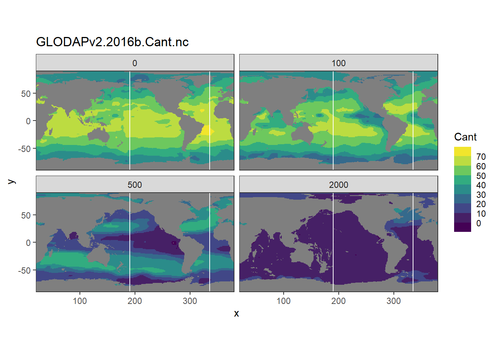
NO3, NO3_error, Input_mean, Input_std, Input_N, NO3_relerr, 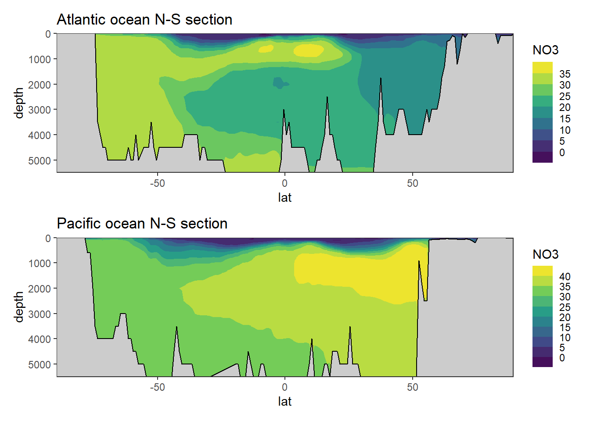
oxygen, oxygen_error, Input_mean, Input_std, Input_N, oxygen_relerr, 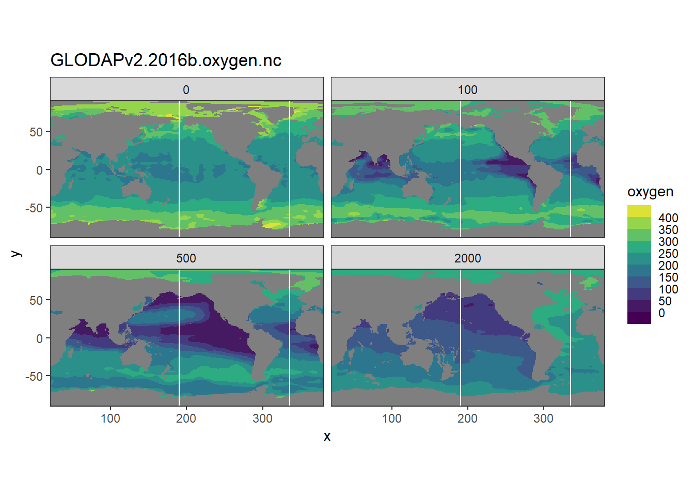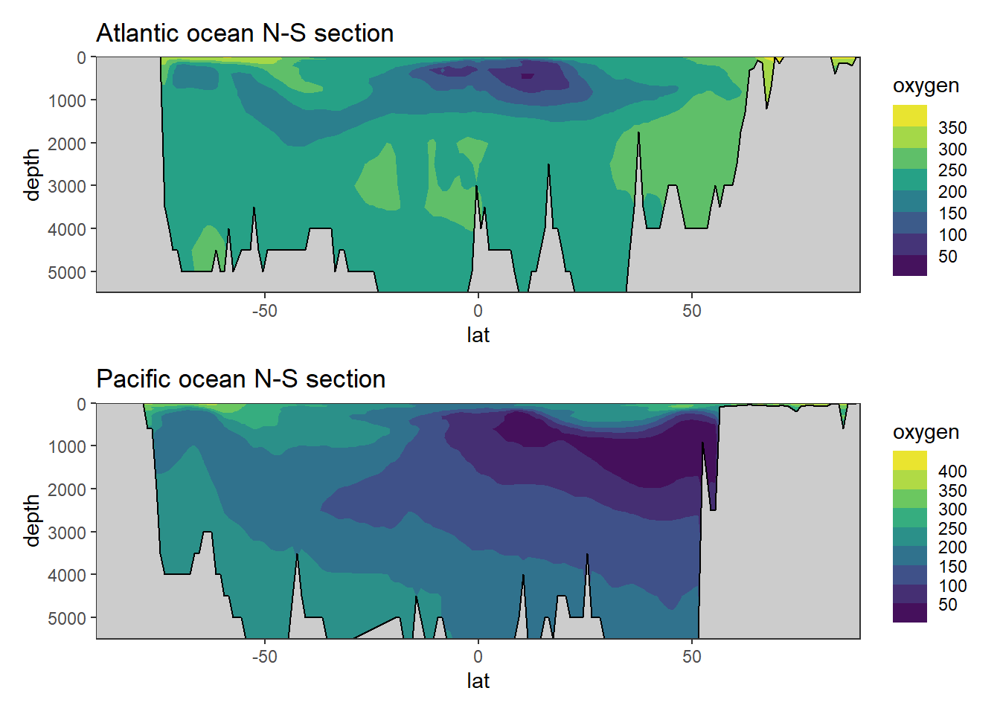
PO4, PO4_error, Input_mean, Input_std, Input_N, PO4_relerr, 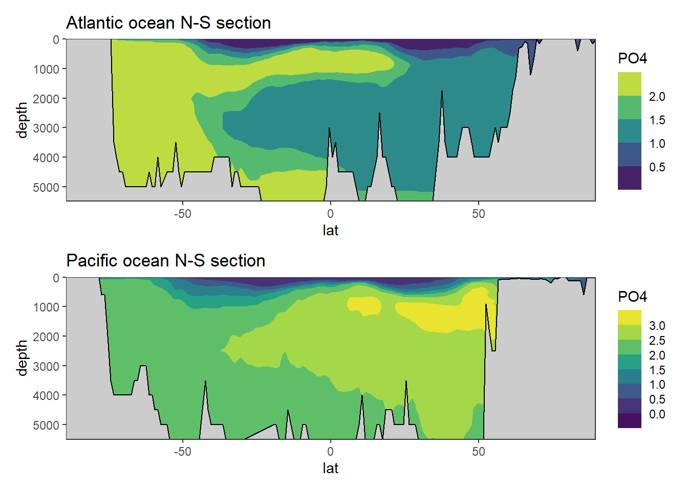
salinity, salinity_error, Input_mean, Input_std, Input_N, salinity_relerr, 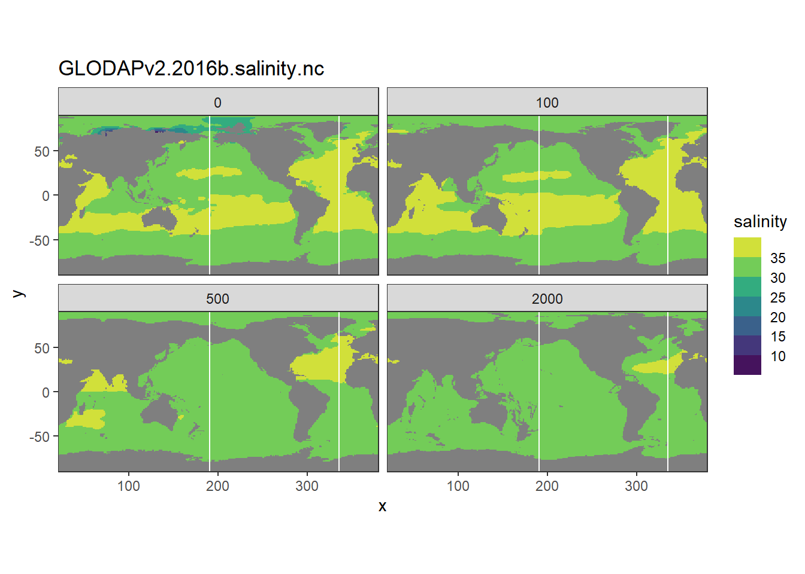
silicate, silicate_error, Input_mean, Input_std, Input_N, silicate_relerr, 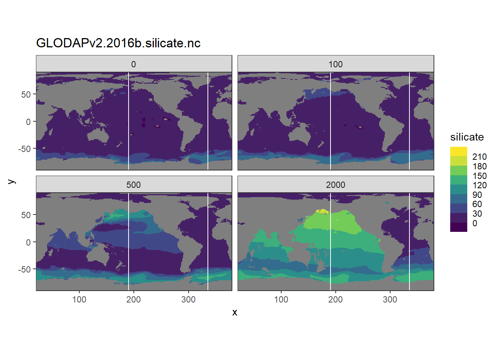
TAlk, TAlk_error, Input_mean, Input_std, Input_N, TAlk_relerr, 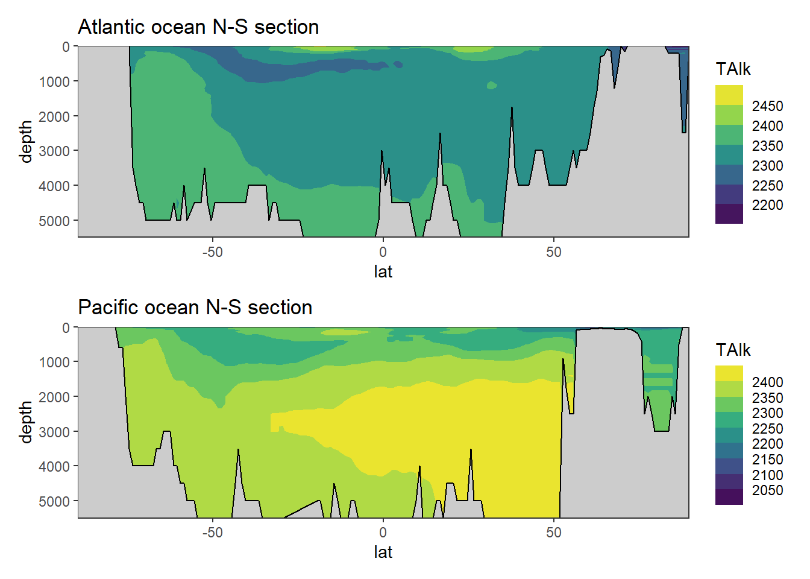
TCO2, TCO2_error, Input_mean, Input_std, Input_N, TCO2_relerr, 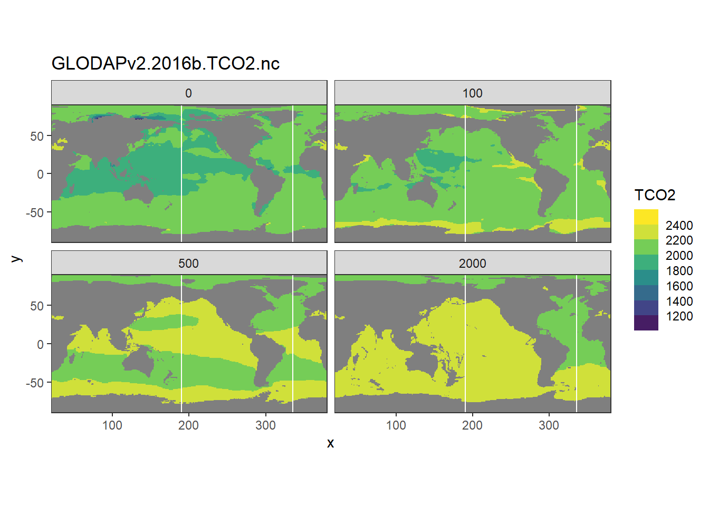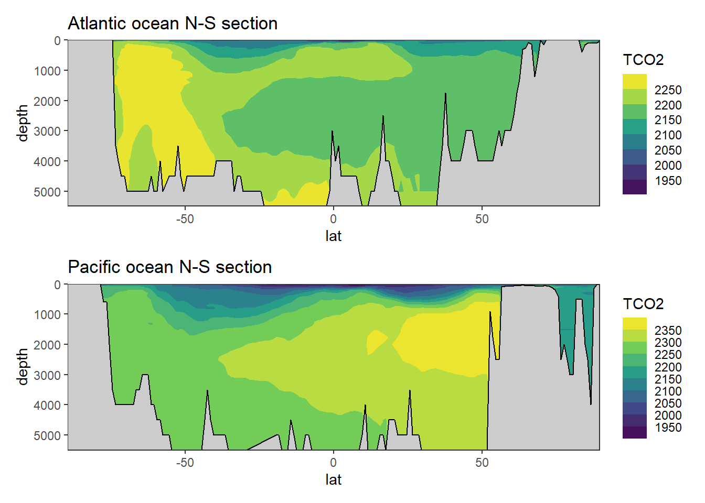
temperature, temperature_error, Input_mean, Input_std, Input_N, temperature_relerr, 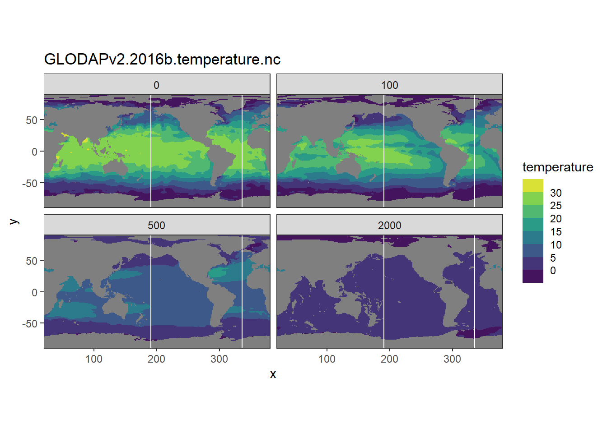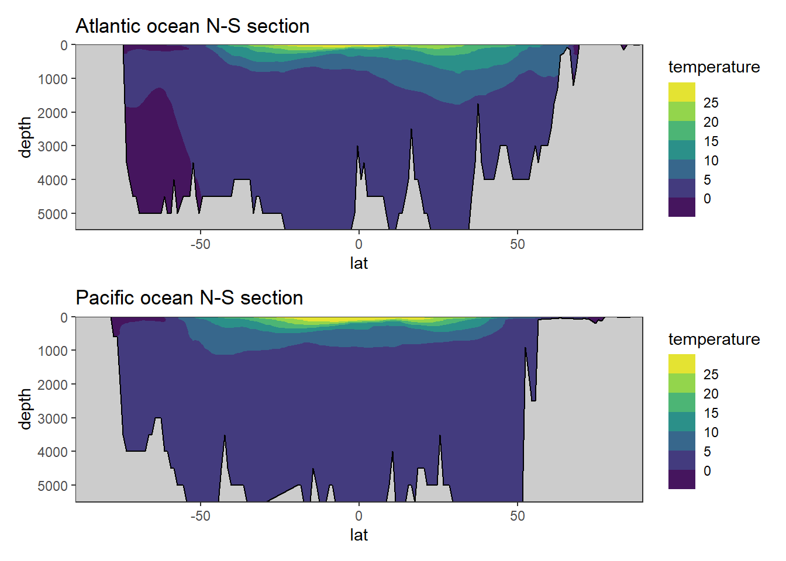
2 Plot Cant section
Cant <- read_csv(here::here("data/GLODAPv2_2016b_MappedClimatologies/_summarized_files",
"Cant.csv"))
Cant_Atl_section <- Cant %>%
filter(x == 335.5)
Cant_Atl_section_bathy <- Cant_Atl_section %>%
filter(is.na(Cant)) %>%
group_by(y) %>%
summarise(depth_surface = min(depth_surface)) %>%
ungroup()
ggplot()+
geom_contour_fill(data = Cant_Atl_section,
aes(y, depth_surface, z=Cant),
na.fill = TRUE)+
geom_ribbon(data = Cant_Atl_section_bathy,
aes(x = y, ymin = depth_surface, ymax = 5500),
fill = "grey30",
col="black")+
scale_y_reverse()+
scale_fill_viridis_b(breaks = seq(0,100,10))+
coord_cartesian(expand = 0)3 Open tasks
- none
4 Questions
- none
sessionInfo()R version 3.6.3 (2020-02-29)
Platform: i386-w64-mingw32/i386 (32-bit)
Running under: Windows 10 x64 (build 18363)
Matrix products: default
locale:
[1] LC_COLLATE=English_Germany.1252 LC_CTYPE=English_Germany.1252
[3] LC_MONETARY=English_Germany.1252 LC_NUMERIC=C
[5] LC_TIME=English_Germany.1252
attached base packages:
[1] stats graphics grDevices utils datasets methods base
other attached packages:
[1] patchwork_1.0.1 metR_0.7.0 stars_0.4-3 sf_0.9-4
[5] abind_1.4-5 tidync_0.2.4 lubridate_1.7.9 forcats_0.5.0
[9] stringr_1.4.0 dplyr_1.0.0 purrr_0.3.4 readr_1.3.1
[13] tidyr_1.1.0 tibble_3.0.3 ggplot2_3.3.2 tidyverse_1.3.0
[17] workflowr_1.6.2
loaded via a namespace (and not attached):
[1] Rcpp_1.0.5 whisker_0.4 knitr_1.29 xml2_1.3.2
[5] magrittr_1.5 units_0.6-7 hms_0.5.3 rvest_0.3.5
[9] tidyselect_1.1.0 lattice_0.20-41 viridisLite_0.3.0 here_0.1
[13] colorspace_1.4-1 R6_2.4.1 rlang_0.4.7 fansi_0.4.1
[17] parallel_3.6.3 broom_0.7.0 xfun_0.15 e1071_1.7-3
[21] ncmeta_0.2.5 cubelyr_1.0.0 dbplyr_1.4.4 modelr_0.1.8
[25] withr_2.2.0 git2r_0.27.1 ellipsis_0.3.1 htmltools_0.5.0
[29] class_7.3-17 assertthat_0.2.1 rprojroot_1.3-2 digest_0.6.25
[33] lifecycle_0.2.0 RNetCDF_2.3-1 haven_2.3.1 rmarkdown_2.3
[37] sp_1.4-2 compiler_3.6.3 cellranger_1.1.0 pillar_1.4.6
[41] scales_1.1.1 backports_1.1.5 generics_0.0.2 classInt_0.4-3
[45] jsonlite_1.7.0 httpuv_1.5.4 pkgconfig_2.0.3 rstudioapi_0.11
[49] munsell_0.5.0 plyr_1.8.6 blob_1.2.1 httr_1.4.1
[53] tools_3.6.3 grid_3.6.3 data.table_1.12.8 checkmate_2.0.0
[57] gtable_0.3.0 KernSmooth_2.23-16 DBI_1.1.0 cli_2.0.2
[61] readxl_1.3.1 yaml_2.2.1 lwgeom_0.2-5 crayon_1.3.4
[65] farver_2.0.3 later_1.1.0.1 promises_1.1.1 fs_1.4.2
[69] vctrs_0.3.1 ncdf4_1.17 memoise_1.1.0 glue_1.4.1
[73] evaluate_0.14 labeling_0.3 reprex_0.3.0 stringi_1.4.6